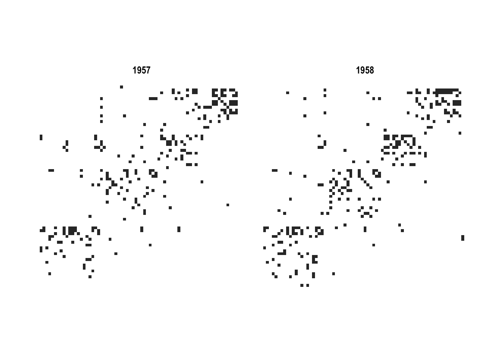
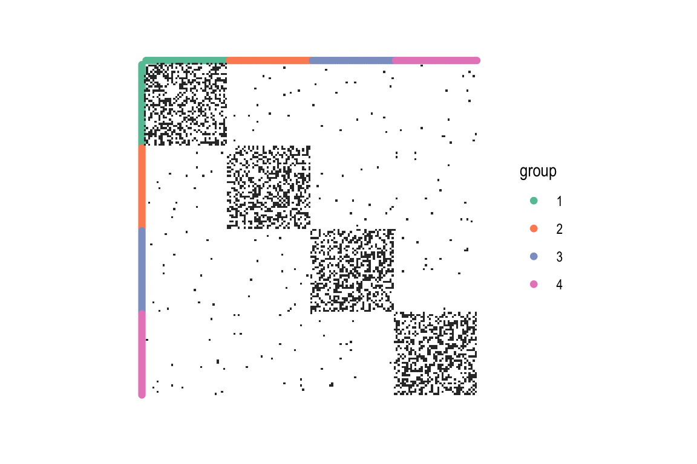
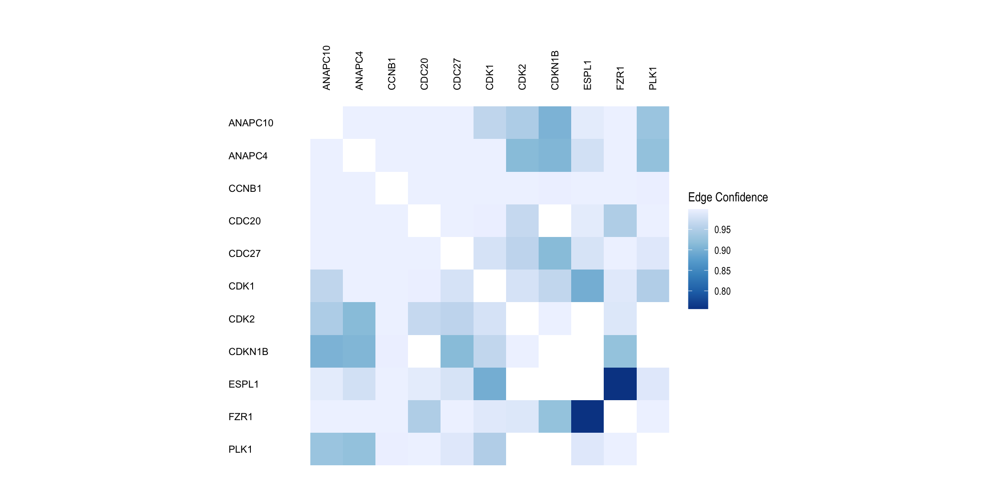
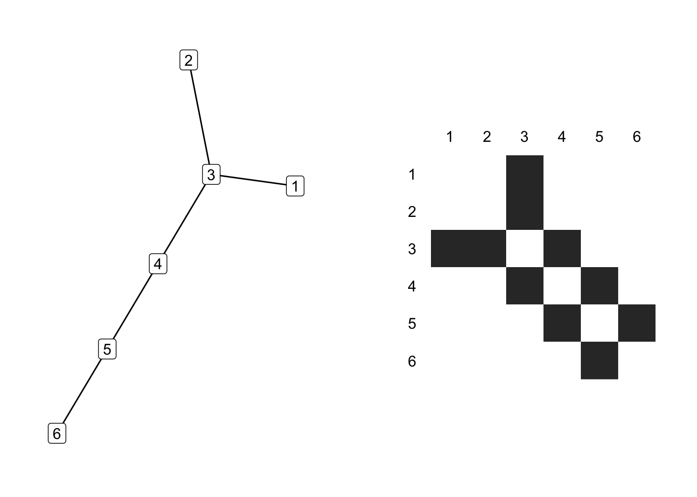
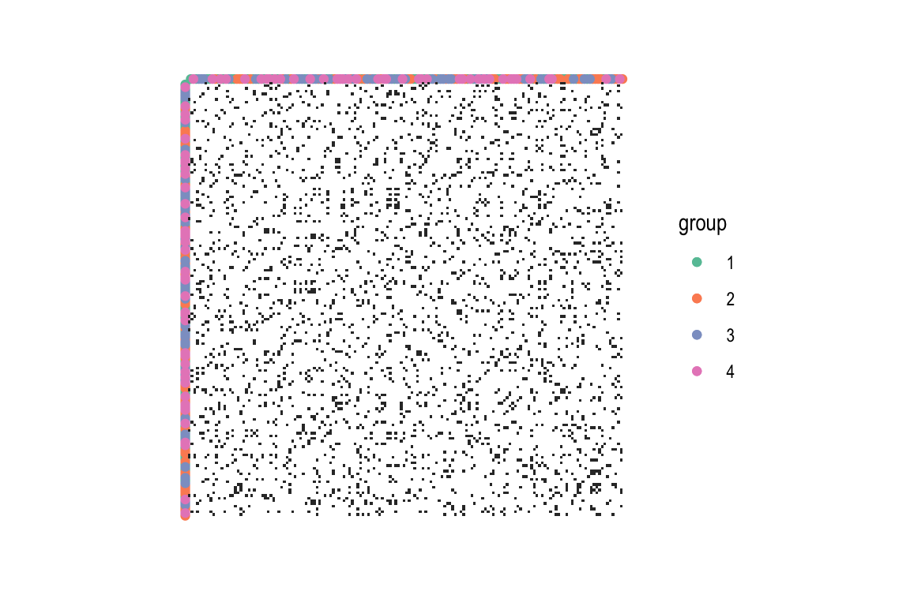

library(tidyverse)
library(knitr)
library(gridExtra)
library(igraph)
library(ggraph)
library(tidygraph)
theme_set(theme_graph())Adjacency Matrix Views
A scalable network visualization strategy.
Reading (Chapter 9), Recording, Rmarkdown
The adjacency matrix of an undirected graph is the matrix with a 1 in entry \(ij\) if nodes \(i\) and \(j\) are linked by an edge and 0 otherwise. It has one row and one column for every node in the graph. Visually, these 1’s and 0’s can be encoded as a black and white squares.
The example below shows the node-link and adajcency matrix plots associated with the toy example from the first lecture.
E <- matrix(c(1, 3, 2, 3, 3, 4, 4, 5, 5, 6),
byrow = TRUE, ncol = 2) %>%
as_tbl_graph() %>%
mutate(
id = row_number(),
group = id < 4
)
p1 <- ggraph(E, layout = 'kk') +
geom_edge_fan() +
geom_node_label(aes(label = id))
p2 <- ggraph(E, "matrix") +
geom_edge_tile(mirror = TRUE, show.legend = TRUE) +
geom_node_text(aes(label = id), x = -.5, nudge_y = 0.5) +
geom_node_text(aes(label = id), y = 0.5, nudge_x = -0.5) +
scale_y_reverse(expand = c(0, 0, 0, 1.5)) + # make sure the labels aren't hidden
scale_x_discrete(expand = c(0, 1.5, 0, 0)) +
coord_fixed() # make sure squares, not rectangles
grid.arrange(p1, p2, ncol = 2)
In a directed graph, the \(ij^{th}\) entry is set to 1 if node \(i\) leads directly to node \(j\). Unlike the undirected graph, it is not necessarily symmetric.
The example below shows the adjacency matrix associated with the high-school student friendship network from last lecture. This is a directed graph, because the students were surveyed about their closest friends, and this was not always symmetric.
G_school <- as_tbl_graph(highschool) %>%
activate(edges) %>%
mutate(year = factor(year))
ggraph(G_school, "matrix") +
geom_edge_tile() +
coord_fixed() +
facet_wrap(~ year)
- Node properties can be encoded along the rows and columns of the matrix. Edge properties can be encoded by the color or opacity of cells in the matrix. The example below simulates clustered data and draws the cluster label for each node along rows / columns.
G <- sample_islands(4, 40, 0.4, 15) %>%
as_tbl_graph() %>%
mutate(
group = rep(seq_len(4), each = 40),
group = as.factor(group)
)
ggraph(G, "matrix") +
geom_node_point(aes(col = group), x = -1) +
geom_node_point(aes(col = group), y = 1) +
geom_edge_tile(mirror = TRUE) +
scale_y_reverse() +
scale_color_brewer(palette = "Set2") +
coord_fixed()
The example below takes a protein network and colors each edge according to the weight of experimental evidence behind that interaction.
proteins <- read_tsv("https://uwmadison.box.com/shared/static/t97v5315isog0wr3idwf5z067h4j9o7m.tsv") %>%
as_tbl_graph(from = node1, to = node2)
ggraph(proteins, "matrix") +
geom_edge_tile(aes(fill = combined_score), mirror = TRUE) +
coord_fixed() +
geom_node_text(aes(label = name), size = 3, x = -2.5, nudge_y = 0.5, hjust = 0) +
geom_node_text(aes(label = name), size = 3, angle = 90, y = 0.5, nudge_x = -0.5, hjust = 0) +
scale_y_reverse(expand = c(0, 0, 0, 2.7)) + # make sure the labels aren't hidden
scale_x_discrete(expand = c(0, 3, 0, 0)) +
scale_edge_fill_distiller() +
labs(edge_fill = "Edge Confidence")
The key advantage of visualization using adjacency matrices is that they can scale to large and dense networks. It’s possible to perceive structure even when the squares are quite small, and there is no risk of edges overlapping with one another.
Adjacency matrices can be as useful as node-link diagrams for the task of finding group structure. The example below shows how cliques (fully connected subsets), bicliques (sets of nodes that are fully connected between one another), and clusters (densely, but not completely, connected subsets) are clearly visible in both node-link and adjacency matrix visualizations.

- The key disadvantage of adjacency matrix visualization is that it’s challenging to make sense of the local topology around a node. Finding the « friends of friends » of a node requires effort.
grid.arrange(p1, p2, ncol = 2)
- Another issue is that different orderings of rows and columns can have a dramatic effect on the structure that’s visible1. For example, here is the same clustered network from 5., but with a random reordering of rows and columns. This is also beautifully illustrated at this page (change the “order” dropdown menu).
ggraph(G, "matrix", sort.by = sample(1:160)) +
geom_node_point(aes(col = group), x = -1) +
geom_node_point(aes(col = group), y = 1) +
geom_edge_tile(mirror = TRUE) +
scale_y_reverse() +
scale_color_brewer(palette = "Set2") +
coord_fixed()
These visualizations also tend to be less intuitive for audiences that haven’t viewed them before.
In a sense, adjacency matrix and node-link visualizations are complementary to one another. Some approaches try to use the adjacency matrix to give a global view of a network, and dynamic queries on the adjacency matrix can reveal the associated, local node-link diagrams.
Footnotes
Though viewed differently, this additional degree of freedom can facilitate richer comparisons.↩︎